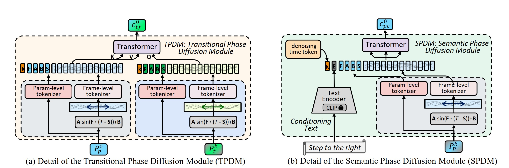
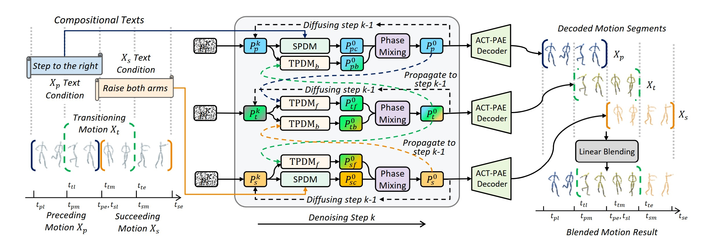
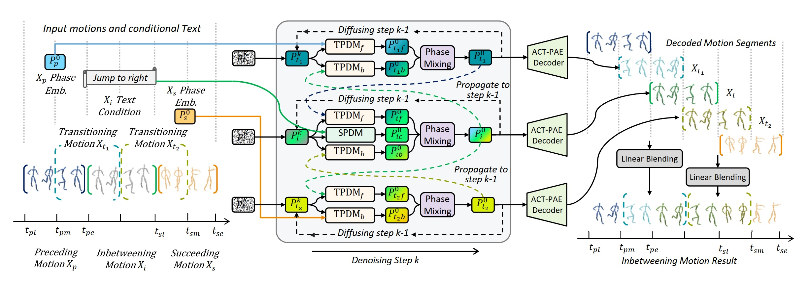

Deep Compositional Phase Diffusion for Long Motion Sequence Generation
Abstract
Recent research on motion generation has shown significant progress in generating semantically aligned motion with singular semantics. However, when employing these models to create composite sequences containing multiple semantically generated motion clips, they often struggle to preserve the continuity of motion dynamics at the transition boundaries between clips, resulting in awkward transitions and abrupt artifacts. To address these challenges, we present Compositional Phase Diffusion, which leverages the Semantic Phase Diffusion Module (SPDM) and Transitional Phase Diffusion Module (TPDM) to progressively incorporate semantic guidance and phase details from adjacent motion clips into the diffusion process. Specifically, SPDM and TPDM operate within the latent motion frequency domain established by the pre-trained Action-Centric Motion Phase Autoencoder (ACT-PAE). This allows them to learn semantically important and transition-aware phase information from variable-length motion clips during training. Experimental results demonstrate the competitive performance of our proposed framework in generating compositional motion sequences that align semantically with the input conditions, while preserving phase transitional continuity between preceding and succeeding motion clips. Additionally, motion inbetweening task is made possible by keeping the phase parameter of the input motion sequences fixed throughout the diffusion process, showcasing the potential for extending the proposed framework to accommodate various application scenarios.
Frameworks
TPDM & SPDM

The SPDM module is designed to denoise the phase latents, using the input text as its condition. Similarly, the TPDM module also denoises the phase latents, but it relies on phase information from the adjacent motion segment for conditioning. To fully leverage the phase latent representation from ACT-PAE, we feed both the concatenated phase latents—F, A, B, and S—along with the reparameterized periodic signal Q into both modules. This combined input helps the modules capture the spatial-temporal context in the phase latents, especially the motion length and the boundaries between segments. As a result, SPDM and TPDM can better plan for motion semantic context based on sequence length, and generate smoother, well-aligned transitions at boundaries, leading to more natural continuity between motion segments.
Compositional Motion Generation

The pipeline for the Compositional Motion Generation task. Given two consecutive text conditions, the pipeline denoises the phase latents corresponding to the preceding and succeeding motions, as well as an intermediate transition segment that is linearly blended into the final output to ensure smooth transition. Denoising of phase latents is performed using the SPDM to integrate semantic information from the text, and the TPDM to incorporate contextual information from neighboring motion segments. Once outputs are obtained from both SPDM and TPDM, phase mixing is applied, which computes a weighted average of the phase parameters to produce the final denoised phase latents at each denoising step. These latents are then either diffused to the diffusion step k − 1, or decoded by ACT-PAE to generate the output motion segments. Finally, the transition segment is linearly blended into the overlap region between the preceding and succeeding motions. Notably, the transition segment is denoised jointly with the adjacent segments and decoded by ACT-PAE, ensuring compatibility in context and facilitating a seamless transition between motion segments.
Motion Inbetweening

The pipeline for the Motion Inbetweening task. In this case, both the preceding and succeeding motion segments are provided. We encode these segments using the ACT-PAE encoder and input the resulting phase latents into the pipeline to denoise the inbetweening motion, and also two additional transition motions to ensure a smooth transition between segments. Once we have denoised all the necessary segments with TPDMs, we decode them using the ACT-PAE decoder. Finally, we linearly blend the overlapping regions between the preceding, inbetweening, and succeeding motions so that the final output remains smooth and coherent. Additionally, our pipeline can be extended to conditional motion inbetweening by conditioning the inbetweening motion segment on text input, through the integration of an optional SPDM.
Result of Compositional Motion Generation.
Result of Unconditional Motion Inbetweening (UMIB).
BibTeX
@inproceedings{au2025transphase,
title={Deep Compositional Phase Diffusion for Long Motion Sequence Generation},
author={Au, Ho Yin and Chen, Jie and Jiang, Junkun and Xiang, Jingyu},
year={2025},
booktitle={The Thirty-ninth Annual Conference on Neural Information Processing Systems}
}